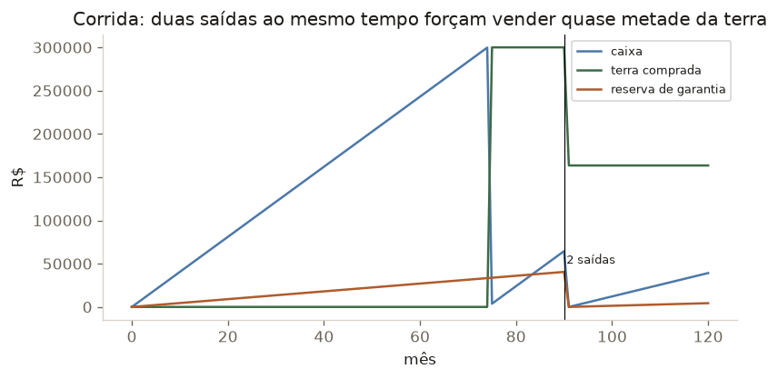
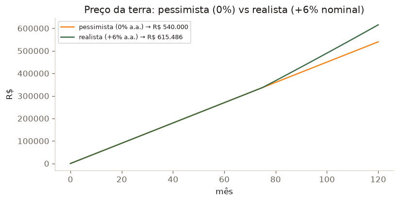
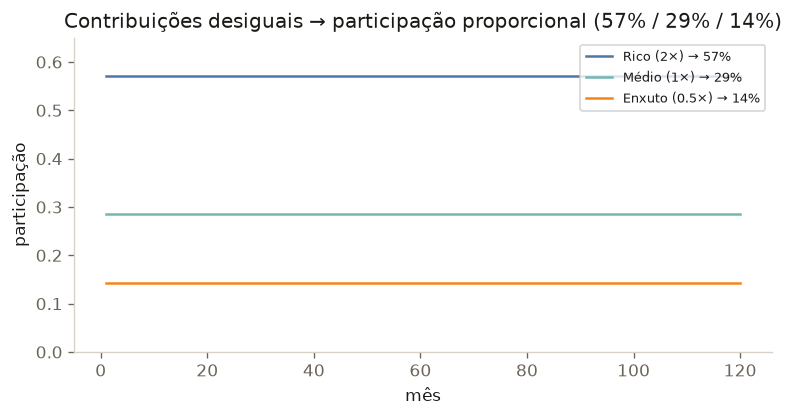
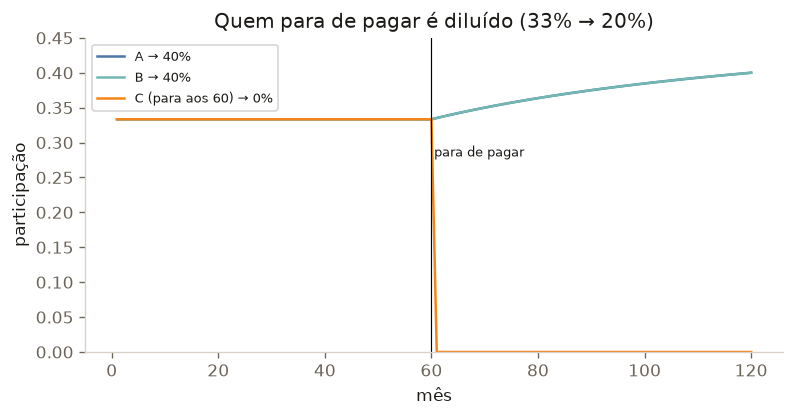

Saída antes vs depois da compra da terra
Sair antes da compra é simples: o dinheiro ainda está em caixa. Sair depois é o momento mais delicado — o dinheiro já virou terra.

Corrida na reserva — duas saídas ao mesmo tempo
O pior caso para um fundo auto-segurado: duas pessoas saem juntas, com o dinheiro já investido em terra.

O preço da terra muda tudo
Na média histórica, a terra agrícola brasileira valoriza — subiu 113% nos últimos 5 anos (Scot Consultoria, via Canal Rural; o hectare médio foi de R$ 14,8 mil a R$ 31,6 mil). Desvalorização nominal é rara. Por isso usamos dois cenários: pessimista (0% a.a. — a terra estagna e perde só para a inflação) e realista (+6% a.a. — ainda bem abaixo da média).

Contribuições desiguais

Quem para de pagar é diluído
